Capítulo 3 DAGs
3.1 Introdução

No capítulo anterior, vimos que a ignorabilidade forte nos permite identificar efeitos causais — mas ela depende de condicionarmos nas covariáveis certas. Ficamos com uma pergunta em aberto: como saber quais variáveis incluir em \(\mathbf{X}_i\) para que a ignorabilidade seja plausível? E quais variáveis não devemos condicionar?
Neste capítulo, introduzimos uma ferramenta que nos ajuda a responder essas perguntas: os grafos acíclicos direcionados (Directed Acyclic Graphs, ou DAGs). Essa abordagem foi desenvolvida na ciência da computação entre os anos 80 e 90 e é associada ao trabalho pioneiro de Pearl (2009). Para uma história acessível de como surgiu, ver Pearl and Mackenzie (2018).
Abaixo temos um exemplo simples de um DAG:
Eles são chamados de DAGs porque são direcionados (as flechas apontam em uma direção), acíclicos (se \(A\) causa \(B\), então \(B\) não pode causar \(A\)) e grafos (são representações gráficas de relações entre variáveis).
No exemplo acima, o DAG é formado por três variáveis \(\{Y, X, Z\}\), que são, em geral, variáveis aleatórias, e as flechas indicam a direção de causalidade: \(X\) causa \(Y\) e \(Z\) causa \(Y\). É importante saber que DAGs são não paramétricos e podem ser interpretados como \(Y = f(X, Z)\), para qualquer função \(f\). Alguns exemplos compatíveis com o DAG acima:
- \(Y = X + Z\)
- \(Y = 10 + X + Z + X \cdot Z\)
- \(Y = 3 \cdot X^Z\)
- \(Y = \pi \cdot Z/X + X^2 + 1/Z^3\)
A razão pela qual não escrevemos DAGs como equações é que \(Y = f(X, Z)\) não expressa adequadamente a relação de causalidade, pois, em matemática, é indiferente escrever \(f(X, Z) = Y\) ou \(Y = f(Z, X)\). Porém, dizer que \(X\) e \(Z\) causam \(Y\) é muito diferente de dizer que \(Y\) causa \(X\) e \(Z\). Com o DAG, as flechas indicam a direção da causalidade.
Na regressão, tentamos capturar essa assimetria com a terminologia: chamamos \(Y\) de “variável dependente” ou “resposta” e \(X\) de “variável explicativa” ou “independente”. Mas isso é apenas uma convenção de linguagem — formalmente, nada impede de reescrever a equação isolando \(X\). Por exemplo, se \(Y = \alpha + \beta X + \epsilon\), podemos perfeitamente escrever \(X = (Y - \alpha - \epsilon)/\beta\), e a matemática é igualmente válida. A equação não sabe qual variável é a causa e qual é o efeito. O DAG, por contraste, incorpora a direção causal na própria estrutura: a flecha \(X \to Y\) não pode ser invertida.
3.2 Os Tipos Básicos de DAGs
Qualquer DAG, por mais complexo que seja, é composto por combinações de três estruturas elementares. Compreender como cada uma delas afeta a dependência entre variáveis é a chave para decidir quais variáveis controlar em uma análise causal.
3.2.1 1. Chain (cadeia)
Em uma chain, \(X\) causa \(W\) que, por sua vez, causa \(Y\). Aqui, \(W\) é o mediador do efeito de \(X\) sobre \(Y\).
Exemplo: O desempenho econômico de um país pode aumentar a popularidade do presidente, o que leva a mais votos.
3.2.2 2. Fork (garfo)
Em um fork, uma variável \(W\) causa tanto \(X\) quanto \(Y\). Dessa forma, \(W\) é uma causa comum que pode gerar correlação espúria entre \(X\) e \(Y\).
Exemplo: A qualidade de um candidato pode fazer com que ele arrecade mais dinheiro para a campanha e, ao mesmo tempo, obtenha mais votos.
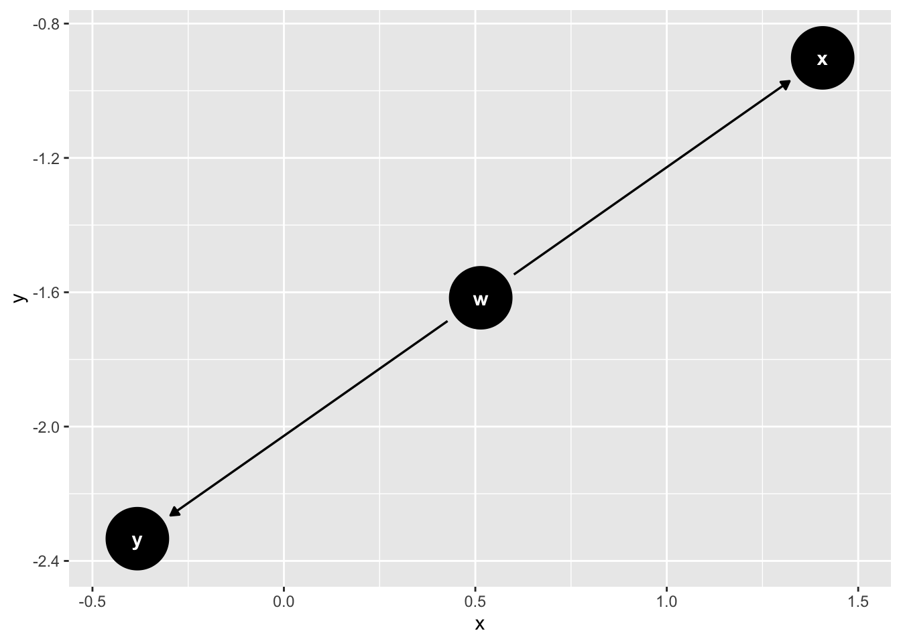
3.2.3 3. Collider (colisor)
Em um collider, \(X\) causa \(W\) e \(Y\) também causa \(W\). Esse tipo de estrutura é também chamado de “fork invertido”. Apesar de \(X\) e \(Y\) não terem relação causal direta, controlar para \(W\) (ou um de seus descendentes) pode introduzir uma correlação espúria entre \(X\) e \(Y\).
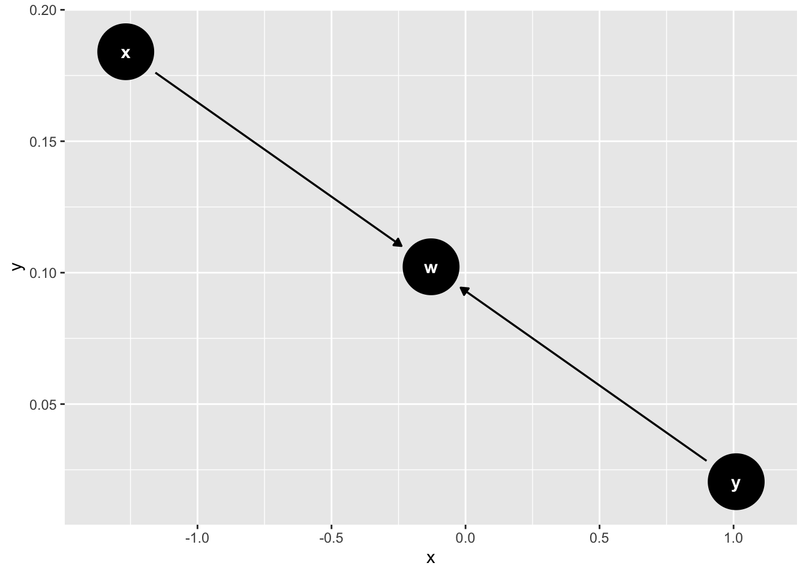
Exemplo: Imagine que você organiza uma festa e convida apenas pessoas que fazem ciência política ou são canhotas. Na população geral, pode não haver relação entre essas características, mas na festa pode surgir uma correlação: se sabemos que uma pessoa está na festa e ela é canhota, é mais provável que ela não faça ciência política — pois a condição de canhota já explica sua presença na festa.
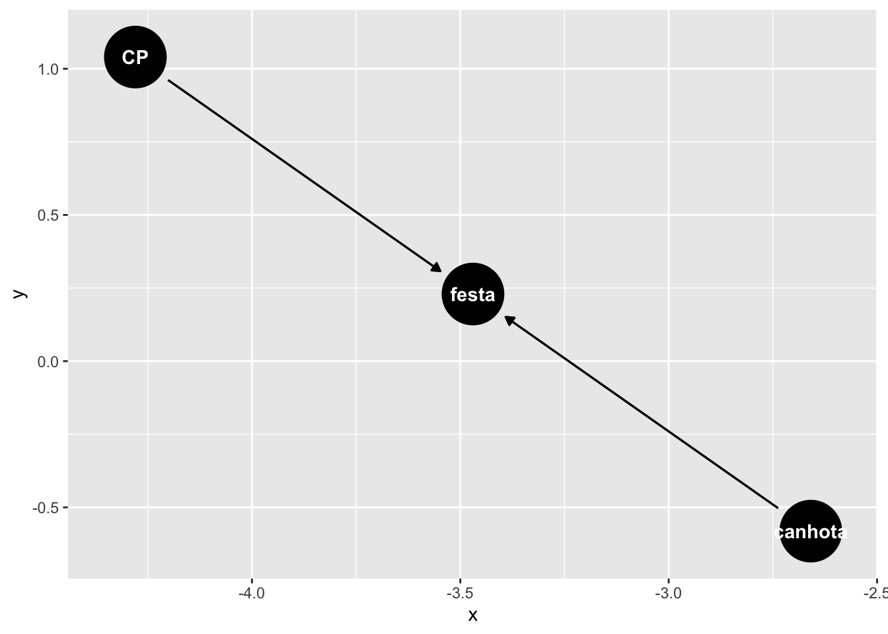
Esses três tipos — chains, forks e colliders — são os blocos fundamentais a partir dos quais qualquer DAG pode ser construído. Vejamos agora uma simulação que ilustra o viés que pode surgir quando condicionamos em um collider.
3.3 Simulação no R: Ilustrando o Collider Bias
Vamos rodar uma simulação para ilustrar o collider bias. Suponha que 10% das pessoas fazem ciência política e 5% são canhotas, e que essas duas características são independentes na população.
set.seed(4)
# Gerando as variáveis
cp <- rbinom(1000, 1, p = 0.1) # 10% fazem ciência política
canhoto <- rbinom(1000, 1, p = 0.05) # 5% são canhotos
# Condição da festa: convida se faz CP ou é canhoto
festa <- ifelse(cp == 1 | canhoto == 1, 1, 0)
tabela <- data.frame(cp, canhoto, festa)
# Correlação na população geral
cat("Correlação na população:", round(cor(cp, canhoto), 3), "\n")## Correlação na população: -0.016# Correlação entre os que foram à festa (condicionando no collider)
cor_festa <- tabela %>%
filter(festa == 1) %>%
summarise(cor = round(cor(cp, canhoto), 3))
cat("Correlação na festa (condicionando no collider):", cor_festa$cor, "\n")## Correlação na festa (condicionando no collider): -0.948Na população em geral, a correlação é próxima de zero. Porém, entre as pessoas que foram à festa, a correlação pode chegar a \(-0{,}95\), evidenciando como condicionar em um collider pode induzir correlação espúria. Esse resultado reforça a importância de entender a estrutura causal antes de decidir por quais variáveis condicionar.
3.4 Definições Formais
Agora que temos a intuição dos três tipos básicos, vamos formalizar os conceitos que precisaremos para raciocinar sobre DAGs mais complexos (para uma referência concisa, ver Greenland and Pearl 2014).
3.4.1 Caminhos e relações entre nós
Caminho (path): uma sequência de nós conectados por flechas, independentemente da direção. Por exemplo, no DAG \(X \to W \leftarrow Y\), existe um caminho entre \(X\) e \(Y\) passando por \(W\).
Caminho direcionado (directed path): um caminho em que todas as flechas seguem a mesma direção. Por exemplo, \(X \to W \to Y\) é um caminho direcionado de \(X\) a \(Y\).
Relações entre nós (terminologia da genética):
- Pais de \(Y\): nós com flechas diretas para \(Y\)
- Filhos de \(Y\): nós para os quais \(Y\) tem flechas diretas
- Ancestrais de \(Y\): todos os nós dos quais existe um caminho direcionado até \(Y\)
- Descendentes de \(Y\): todos os nós para os quais existe um caminho direcionado a partir de \(Y\)
3.4.2 d-separação
A d-separação (d de directed) é o conceito central que conecta a estrutura de um DAG às independências estatísticas entre variáveis. Dizemos que dois nós \(X\) e \(Y\) estão d-separados por um conjunto de nós \(\mathbf{Z}\) se todo caminho entre \(X\) e \(Y\) está bloqueado condicional a \(\mathbf{Z}\).
Quando um caminho está bloqueado? Antes de ver as regras, um alerta importante: para determinar se há dependência entre \(X\) e \(Y\), o que importa são caminhos (paths), não caminhos direcionados. A direção das flechas determina o tipo de cada nó no caminho (fork, chain ou collider), mas a dependência estatística pode fluir em qualquer direção. Uma analogia útil: pense em cada caminho como um cano com água. Se o cano está aberto, a água pode fluir em qualquer direção — não apenas na direção das flechas. Estudantes frequentemente cometem o erro de achar que a dependência só “viaja” na direção das flechas; na verdade, um fork \(X \leftarrow W \to Y\) transmite dependência de \(X\) a \(Y\) mesmo que nenhuma flecha aponte de \(X\) para \(Y\).
As regras de bloqueio derivam diretamente dos três tipos básicos:
Chain (\(X \to W \to Y\)): o caminho está aberto por padrão. Condicionar em \(W\) bloqueia o caminho.
Fork (\(X \leftarrow W \to Y\)): o caminho está aberto por padrão (a causa comum \(W\) transmite dependência). Condicionar em \(W\) bloqueia o caminho.
Collider (\(X \to W \leftarrow Y\)): o caminho está fechado por padrão. Condicionar em \(W\) (ou em qualquer descendente de \(W\)) abre o caminho.
A regra geral: um caminho está bloqueado se contém pelo menos um nó que (a) é um não-collider (chain ou fork) e está no conjunto \(\mathbf{Z}\), ou (b) é um collider e nem ele nem seus descendentes estão em \(\mathbf{Z}\).
Exemplo trabalhado. Considere o seguinte DAG:
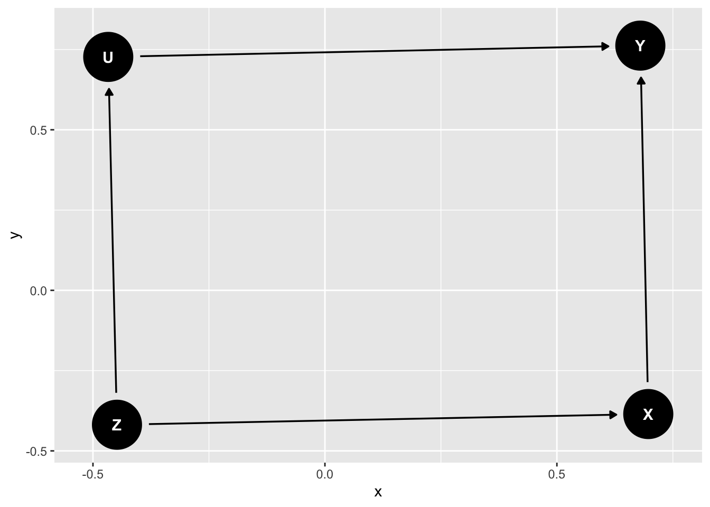
Quais caminhos existem entre \(X\) e \(Y\)?
- \(X \to Y\) — caminho direcionado (causal), sempre aberto
- \(X \leftarrow Z \to U \to Y\) — caminho com estrutura de fork centrada em \(Z\)
O caminho 2 é um backdoor path: ele conecta \(X\) a \(Y\) por trás, transmitindo dependência espúria via \(Z\). Para bloquear esse caminho, podemos condicionar em \(Z\) (que é a causa comum no centro do fork \(X \leftarrow Z \to U\)). Nesse caso, \(X\) e \(Y\) ficam d-separados de toda influência espúria, e a associação remanescente reflete apenas o efeito causal de \(X\) sobre \(Y\).
Pare e pense: e se condicionássemos em \(U\) em vez de \(Z\)? O caminho 2 seria bloqueado? (Resposta: sim, pois \(U\) é um não-collider nesse caminho, e condicionar nele bloqueia a transmissão.)
3.5 Controle e Ajuste
Agora que entendemos d-separação, podemos abordar a questão central: como decidir quais variáveis controlar em uma análise causal?
3.5.1 Condicionar vs. intervir
No contexto dos DAGs, “controlar” pode significar duas coisas diferentes:
Intervir (experimento): determinamos exogenamente o valor da variável. No DAG, isso equivale a remover todas as flechas que entram no nó manipulado — pois o valor da variável não é mais determinado por suas causas, mas pelo pesquisador.
Condicionar (estudo observacional): estratificamos, incluímos como controle numa regressão, ou restringimos a amostra a um subgrupo. No DAG, isso bloqueia caminhos que passam pelo nó condicionado (se for fork/chain) ou abre caminhos (se for collider).
3.5.2 O que acontece ao condicionar
Vamos ilustrar com um DAG concreto. Suponha que queremos estimar o efeito de \(X\) sobre \(Y\):
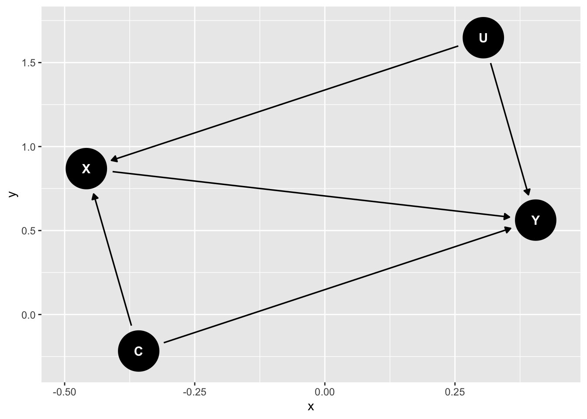
Caminhos entre \(X\) e \(Y\):
- \(X \to Y\) — causal (aberto, queremos preservar)
- \(X \leftarrow C \to Y\) — backdoor via fork com causa comum \(C\) (aberto, causa viés)
- \(X \leftarrow U \to Y\) — backdoor via fork com causa comum \(U\) (aberto, causa viés)
Se condicionarmos em \(C\), bloqueamos o caminho 2. Se \(U\) for não observável, não conseguimos condicionar nele e o caminho 3 permanece aberto — nesse caso, nosso estimador ainda será viesado. Isso ilustra um ponto importante: condicionar em algumas variáveis pode reduzir o viés sem eliminá-lo completamente.
E se condicionássemos em \(U\) também? Nesse caso, todos os backdoor paths estariam bloqueados, e a associação entre \(X\) e \(Y\) refletiria apenas o efeito causal. O conjunto \(\{C, U\}\) satisfaz o critério backdoor, que formalizamos a seguir.
3.5.3 O que dá errado ao condicionar em um collider
Nem sempre mais controles são melhores. Considere uma pesquisadora que estuda o efeito da educação (\(E\)) sobre a renda (\(R\)). Ela observa que habilidade inata (\(H\)) também afeta a renda, e que tanto educação quanto habilidade determinam se a pessoa é aprovada em um concurso público (\(A\)):
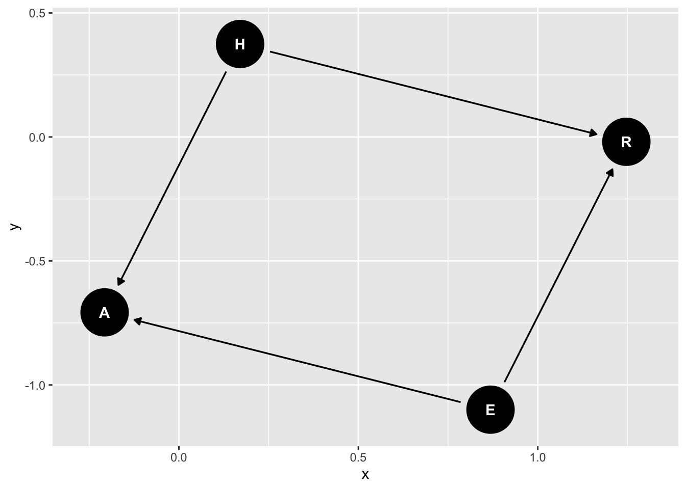
Caminhos entre \(E\) e \(R\):
- \(E \to R\) — causal (aberto)
- \(E \to A \leftarrow H \to R\) — collider em \(A\) (fechado por padrão)
Sem condicionar em nada, a associação entre \(E\) e \(R\) reflete apenas o efeito causal — o caminho 2 já está bloqueado pelo collider. Porém, se a pesquisadora incluir \(A\) (aprovação no concurso) como controle na regressão — “para aumentar a precisão” — ela abre o caminho 2 e cria uma associação espúria entre \(E\) e \(H\) dentro de cada nível de \(A\). O resultado é um estimador mais viesado do que a regressão simples sem controles.
A lição: controlar por variáveis pós-tratamento ou por colliders pode introduzir viés onde não havia. O critério backdoor formaliza quando é seguro condicionar.
3.6 O Critério Backdoor
O critério backdoor, formulado por Pearl (2009), é a ferramenta que nos permite determinar sistematicamente quais variáveis controlar para identificar um efeito causal. Ele responde diretamente à pergunta que deixamos em aberto no Cap. 2: quais covariáveis \(\mathbf{X}_i\) tornam a ignorabilidade plausível?
Definição. Um conjunto de variáveis \(\mathbf{Z}\) satisfaz o critério backdoor em relação ao par ordenado \((X, Y)\) se:
- Nenhum nó em \(\mathbf{Z}\) é descendente de \(X\)
- \(\mathbf{Z}\) bloqueia todo caminho entre \(X\) e \(Y\) que contém uma flecha entrando em \(X\) (todo backdoor path)
Se \(\mathbf{Z}\) satisfaz o critério backdoor, então o efeito causal de \(X\) sobre \(Y\) é identificado pela fórmula de ajuste: basta comparar tratados e controles dentro de cada estrato de \(\mathbf{Z}\) e depois agregar:
\[\text{Efeito causal} = \sum_{z} \left[P(Y = y \mid X = x, \mathbf{Z} = z) - P(Y = y \mid X = x', \mathbf{Z} = z)\right] P(\mathbf{Z} = z)\]
Em palavras: condicionamos em \(\mathbf{Z}\) para bloquear todos os backdoor paths, calculamos a diferença entre tratados e controles em cada estrato, e ponderamos pela distribuição marginal de \(\mathbf{Z}\). Na seção 3.8, veremos como essa fórmula se conecta ao operador \(do()\) de Pearl.
Conexão com resultados potenciais. O critério backdoor é a contrapartida gráfica da ignorabilidade condicional do Cap. 2. Se \(\mathbf{Z}\) satisfaz o critério backdoor, então \(Y(1), Y(0) \perp D \mid \mathbf{Z}\) — exatamente a condição 1 da ignorabilidade forte. Compare com o Teorema 1 do Cap. 2: a fórmula de ajuste acima tem a mesma estrutura. A condição 2 (common support) precisa ser verificada nos dados.
Exemplo. Considere o seguinte DAG sobre o efeito do gasto de campanha (\(X\)) sobre os votos (\(Y\)):
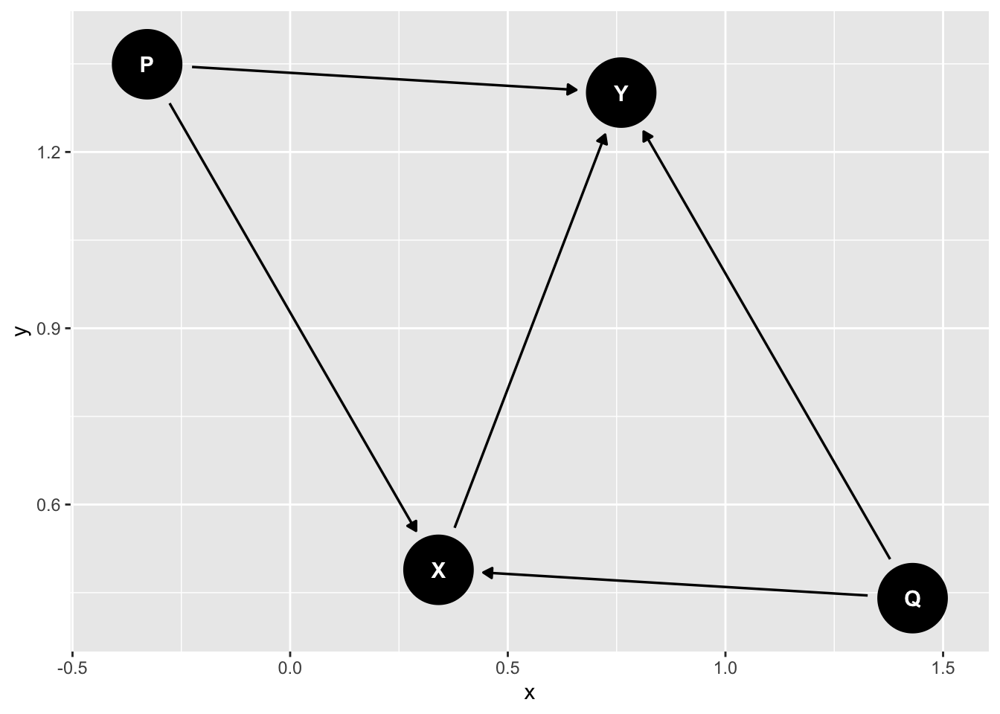
Onde \(Q\) = qualidade do candidato e \(P\) = partido. Caminhos entre \(X\) e \(Y\):
- \(X \to Y\) — causal
- \(X \leftarrow Q \to Y\) — backdoor (fork com causa comum \(Q\))
- \(X \leftarrow P \to Y\) — backdoor (fork com causa comum \(P\))
O único conjunto mínimo que satisfaz o critério backdoor é \(\{Q, P\}\). Controlar apenas por \(\{Q\}\) não basta (caminho 3 permanece aberto) e apenas por \(\{P\}\) também não (caminho 2 permanece aberto). Logo, precisamos controlar por ambos.
Pare e pense: e se houvesse uma variável \(M\) (mídia) tal que \(X \to M \to Y\)? Poderíamos incluir \(M\) no conjunto de ajuste? (Resposta: não — \(M\) é descendente de \(X\), violando a condição 1. Controlar por \(M\) bloquearia parte do efeito causal que queremos estimar.)
3.7 O Operador do
Até aqui, falamos em “condicionar” e “intervir” informalmente. O operador \(do()\), introduzido por Pearl (2009), formaliza a diferença.
3.7.1 Observar vs. intervir
\(P(Y \mid X = x)\) é a probabilidade de \(Y\) dado que observamos \(X = x\). Ela reflete tanto o efeito causal de \(X\) sobre \(Y\) quanto qualquer associação espúria via caminhos backdoor.
\(P(Y \mid do(X = x))\) é a probabilidade de \(Y\) quando intervenimos fixando \(X = x\). No DAG, isso corresponde a uma “cirurgia”: removemos todas as flechas que entram em \(X\) (pois o valor de \(X\) agora é determinado pela intervenção, não por suas causas) e calculamos a distribuição de \(Y\) no DAG modificado.
3.7.2 Quando observar = intervir?
Se não há confounding — ou seja, não há backdoor path aberto entre \(X\) e \(Y\) — então a distribuição observacional é igual à distribuição intervencional:
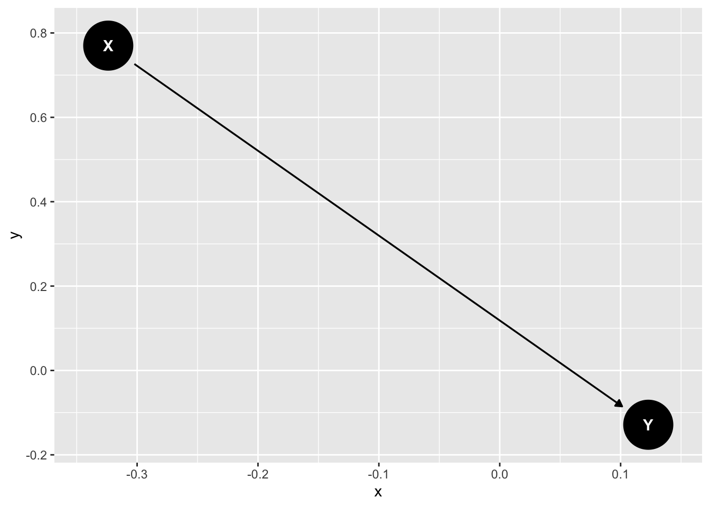
\[P(Y \mid do(X = x)) = P(Y \mid X = x)\]
Porém, quando há confounding, as duas diferem:
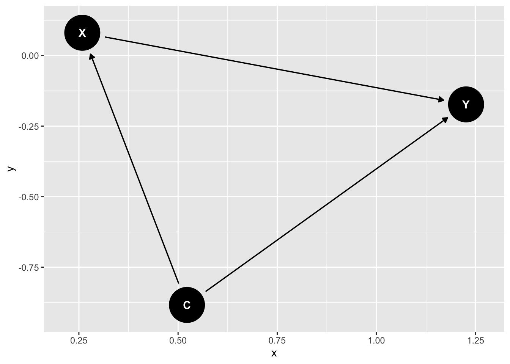
Aqui, \(P(Y \mid X = x) \neq P(Y \mid do(X = x))\), porque observar \(X = x\) traz informação sobre \(C\) (via o caminho \(X \leftarrow C\)), que por sua vez afeta \(Y\). Já ao intervir com \(do(X = x)\), cortamos essa conexão.
O critério backdoor nos diz exatamente como calcular \(P(Y \mid do(X = x))\) a partir de dados observacionais. Com a notação \(do()\), a fórmula de ajuste da seção anterior pode ser reescrita como:
\[P(Y = y \mid do(X = x)) = \sum_{z} P(Y = y \mid X = x, \mathbf{Z} = z) \, P(\mathbf{Z} = z)\]
O lado esquerdo é a quantidade causal que queremos; o lado direito contém apenas quantidades observacionais — condicionamentos e probabilidades marginais que podemos estimar com dados.
Nota técnica: fatorização da probabilidade conjunta. Esta seção é mais formal e pode ser pulada em uma primeira leitura. Ela conecta a estrutura de um DAG à distribuição de probabilidade conjunta das variáveis, explicando por que d-separação implica independência estatística.
Toda distribuição de probabilidade obedece à regra da cadeia: \(P(X_1, \ldots, X_k) = P(X_1) \, P(X_2 \mid X_1) \cdots P(X_k \mid X_1, \ldots, X_{k-1})\). Para \(n\) variáveis, existem \(n!\) fatorizações possíveis. Porém, um DAG impõe restrições: cada nó é condicionalmente independente de seus não-descendentes, dados seus pais. Isso gera a fatorização Markoviana:
\[P(X_1, \ldots, X_k) = \prod_{i=1}^{k} P(X_i \mid \text{Pais}(X_i))\]
Cada fator condiciona apenas nos pais diretos — muito mais parcimonioso que a regra da cadeia genérica. O exemplo abaixo ilustra.
Conexão com causalidade. Quando não há confounding (sem backdoor path aberto), a fatorização observacional coincide com a intervencional: \(P(Y, X) = P(X) \, P(Y \mid X) = P(X) \, P(Y \mid do(X))\). Essa igualdade é o que torna a inferência causal possível a partir de dados observacionais quando o critério backdoor é satisfeito.
Exemplo de fatorização Markoviana. Considere o DAG:
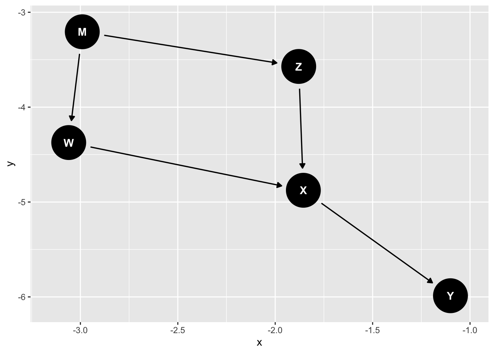
Os pais de cada nó são: \(M\) não tem pais; \(Z\) e \(W\) têm pai \(M\); \(X\) tem pais \(Z\) e \(W\); \(Y\) tem pai \(X\). Logo, a fatorização Markoviana é:
\[P(M, Z, W, X, Y) = P(M) \, P(Z \mid M) \, P(W \mid M) \, P(X \mid W, Z) \, P(Y \mid X)\]
3.8 Limitações dos DAGs
DAGs são uma ferramenta poderosa, mas não são uma solução universal. É importante ter em mente suas limitações:
O DAG precisa estar correto. Toda a análise depende de o pesquisador especificar corretamente a estrutura causal. Se uma flecha estiver faltando (variável confundidora omitida) ou apontando na direção errada, as conclusões sobre o que controlar podem ser equivocadas. O DAG não é testável — ele codifica suposições.
Não capturam ciclos de feedback. DAGs são, por definição, acíclicos. Relações de feedback simultâneo (ex: democracia afeta crescimento, que afeta democracia) não podem ser representadas diretamente. Para esses casos, existem extensões como grafos direcionados cíclicos e modelos de equações estruturais simultâneas, mas estão fora do escopo deste curso.
Não dizem quanto. DAGs são qualitativos: indicam se um efeito causal é identificável e quais variáveis controlar, mas não dizem nada sobre a magnitude do efeito ou a forma funcional da relação. Para isso, precisamos combinar o DAG com um método de estimação (regressão, matching, etc.).
3.9 Resumo e próximos passos
Neste capítulo, introduzimos os DAGs como ferramenta para representar e raciocinar sobre relações causais:
Três tipos básicos. Chains, forks e colliders determinam quais caminhos estão abertos ou fechados. Condicionar fecha caminhos via forks/chains, mas abre caminhos via colliders.
d-separação. Dois nós estão d-separados se todo caminho entre eles está bloqueado. As regras de bloqueio derivam diretamente dos três tipos básicos.
Critério backdoor. Um conjunto \(\mathbf{Z}\) identifica o efeito causal se bloqueia todos os backdoor paths sem incluir descendentes do tratamento. Esse critério é a contrapartida gráfica da ignorabilidade condicional do Cap. 2.
Operador \(do()\). Distingue a distribuição observacional \(P(Y \mid X)\) da intervencional \(P(Y \mid do(X))\). A fórmula de ajuste backdoor conecta as duas.
No próximo capítulo, veremos por que experimentos aleatórios são considerados o padrão-ouro para inferência causal: a aleatorização garante, por construção, que não haja backdoor paths abertos entre o tratamento e o resultado.
3.10 Exercícios
Exercício 1. Considere o seguinte DAG:
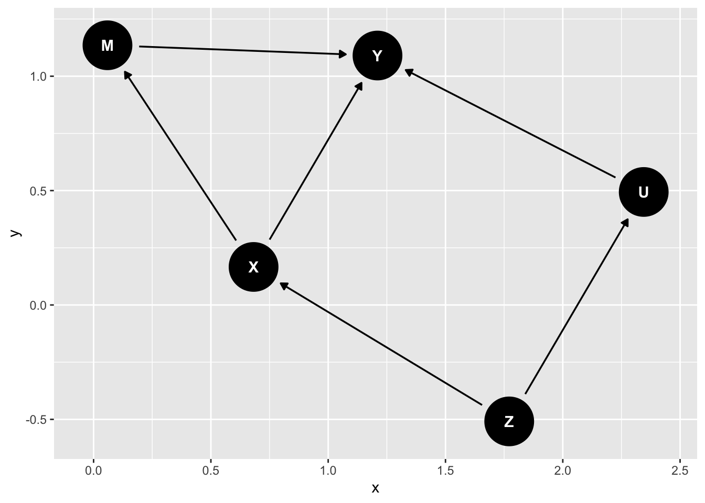
Liste todos os caminhos entre \(X\) e \(Y\).
Classifique cada caminho como causal (direcionado) ou backdoor.
Quais caminhos estão abertos e quais estão fechados (sem condicionar em nada)?
Encontre um conjunto de variáveis que satisfaz o critério backdoor.
Exercício 2. Uma pesquisadora quer estimar o efeito da democracia (\(D\)) sobre o crescimento econômico (\(G\)). Ela acredita que: (i) a riqueza inicial (\(W\)) afeta tanto a probabilidade de democratização quanto o crescimento futuro; (ii) a educação (\(E\)) é causada pela riqueza e afeta tanto a democracia quanto o crescimento; (iii) a democracia afeta o crescimento.
Desenhe o DAG correspondente.
Identifique os backdoor paths entre \(D\) e \(G\).
Qual é o conjunto mínimo de variáveis para satisfazer o critério backdoor? A pesquisadora deveria controlar por educação?
Exercício 3. Um cientista político estuda o efeito de ser incumbente (\(I\)) sobre o voto (\(V\)). Ele inclui como controle a cobertura da mídia (\(M\)), argumentando que “quanto mais controles, melhor”. Porém, ele acredita que ser incumbente causa mais cobertura da mídia, e que a cobertura da mídia causa mais votos (\(I \to M \to V\)).
Desenhe o DAG e identifique o que \(M\) é nessa estrutura (mediador, confundidor ou collider).
Explique por que controlar por \(M\) é problemático.
Em que situação seria correto controlar por \(M\)?